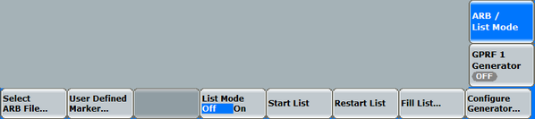

A standard use case in "StandAlone (Non-Signaling)" mode is, to use both the GPRF generator and the GPRF measurement. You generate a signal with the GPRF generator and transmit it to the DUT. With the GPRF measurement, you evaluate the signal transmitted by the DUT. Thus you can test the DUT's reaction on varying generator signals.
For comfortable configuration of this use case, you can couple a GPRF generator instance to the GPRF measurement and access the generator settings from the measurement.
To couple the generator to the measurement:
Select the "Power" tab of the GPRF measurement.
Press the "Config" hotkey to open the "Power" configuration dialog.
Select the "Display and Marker" tab.
Set "Generator Shortcut" to the desired generator instance.
As a result, two generator softkeys are displayed in the measurement. They provide access to the generator configuration.

ARB / List mode: softkey and hotkey bar GPRF generator: softkey and hotkey bar
GPRF generator: softkey and hotkey bar
|